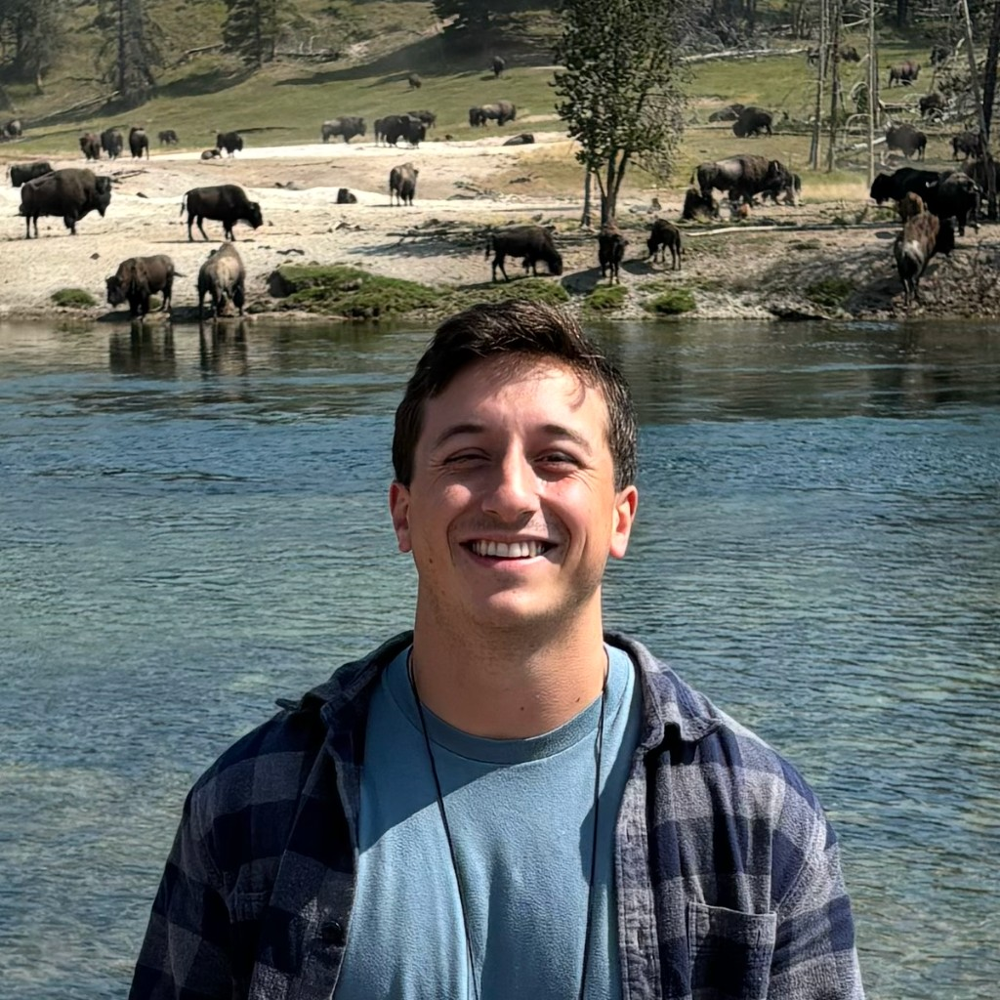

Michael Nercessian
PhD Student, UC Berkeley / UCSF Computational Precision Health, Yala Lab
Member of Technical Staff, Voio
I work on machine learning for healthcare. I'm motivated by a deep conviction that advances in AI will fundamentally reshape medicine and improve patient outcomes. I believe that thoughtful modeling and clinically motivated design coupled with large-scale data and computation will make these breakthroughs possible.
Previously, I've worked on computer vision for pathology (PathAI) and surgical imaging (Golby Lab). Currently, I work on foundation and vision-language models for radiology.
Outside of work: hiking, trail running, backpacking, Buffalo sports.